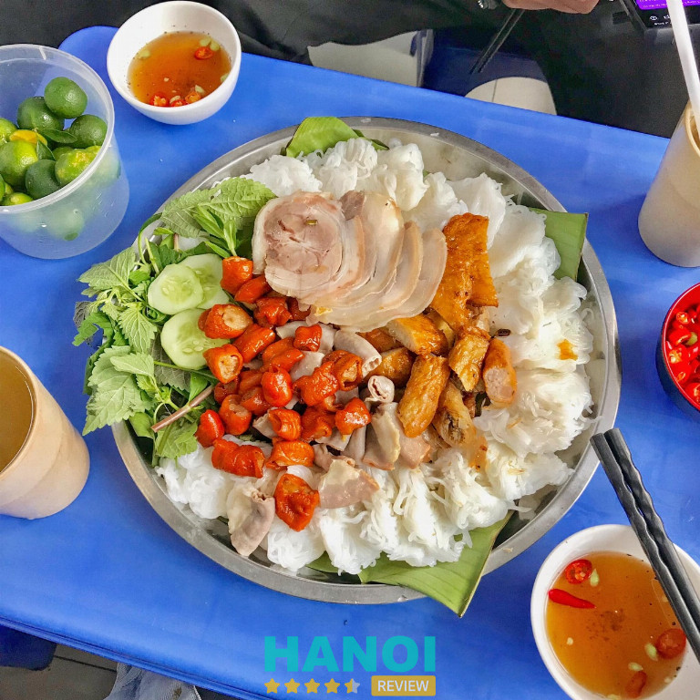
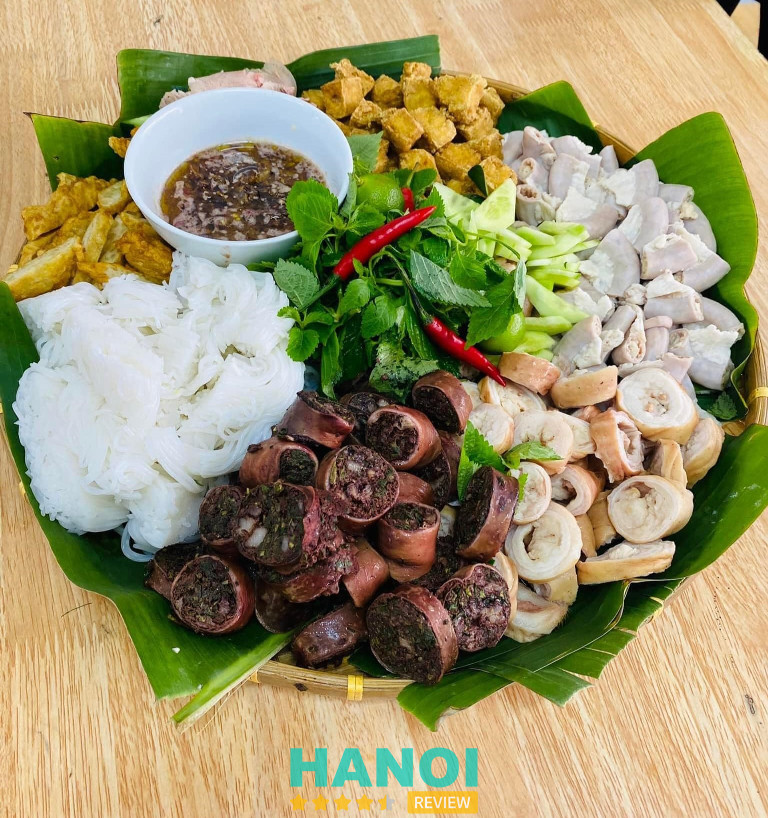
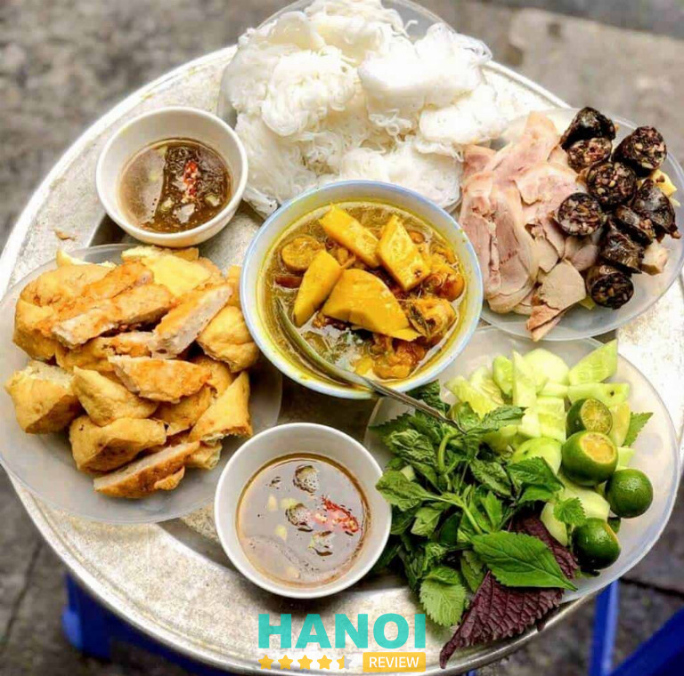
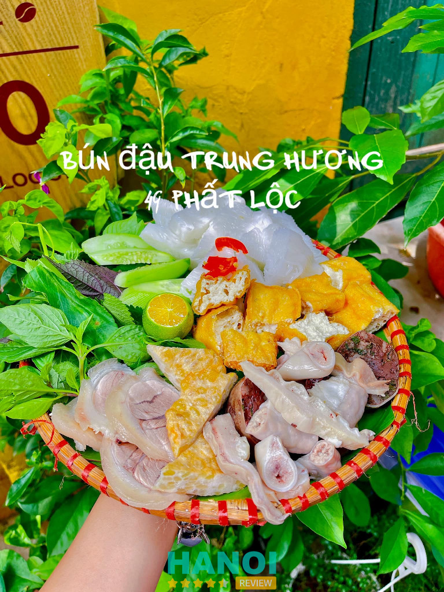
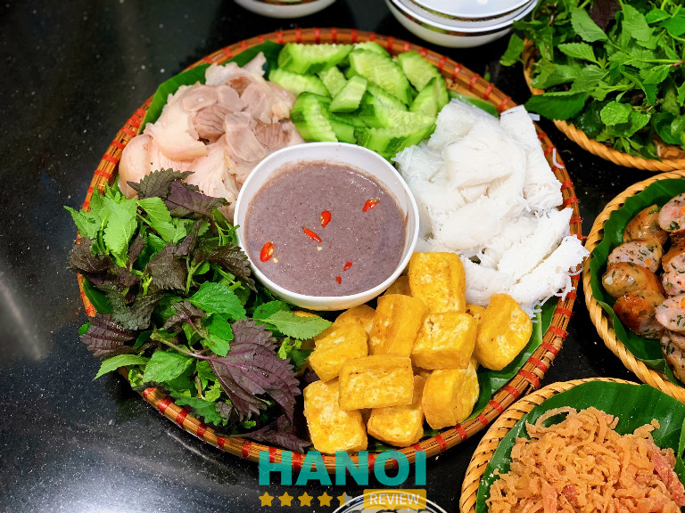
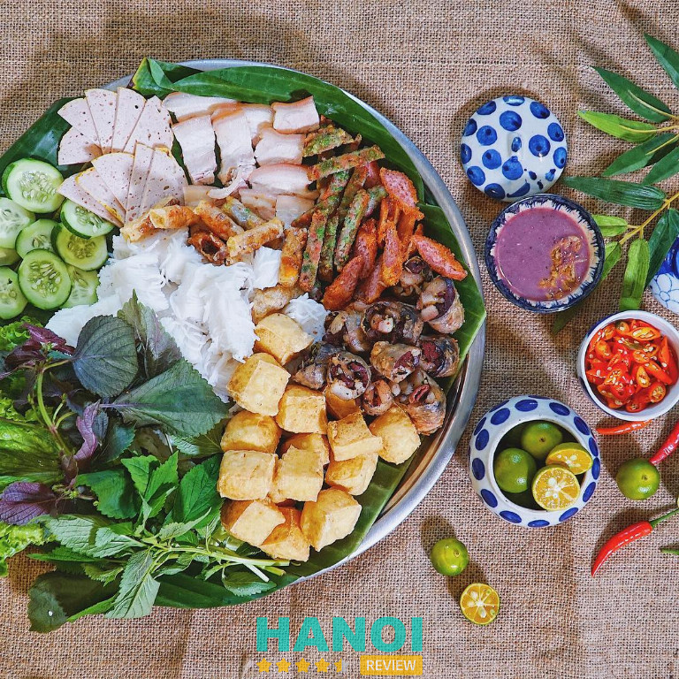
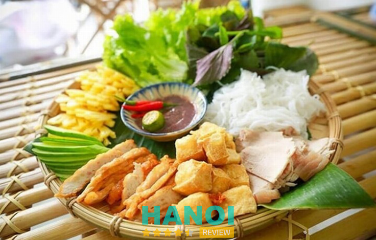
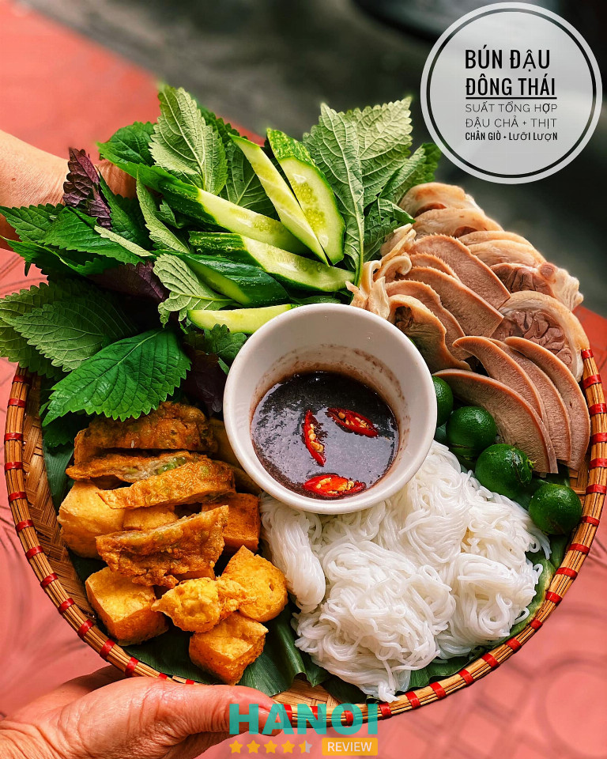

10 Quán bún đậu mắm tôm Phố Cổ Hà Nội ngon nổi tiếng, lâu đời
Thật là một thiếu sót nếu bạn chưa từng thưởng thức bún đậu mắm tôm – món ăn đặc trưng của Hà Nội. Để cảm nhận trọn vẹn hương vị thơm ngon và đậm đà, không gì tuyệt vời hơn là lựa chọn những quán bún đậu mắm tôm chuẩn vị tại Phố Cổ.
Top 10 Quán bún đậu mắm tôm Phố Cổ Hà Nội ngon, nổi tiếng
Bún đậu mắm tôm là một món ăn đặc trưng của Hà Nội, để lại ấn tượng sâu sắc với bất kỳ ai đã từng thưởng thức. Hương vị độc đáo của mắm tôm, kết hợp với bún, đậu rán giòn và các loại topping đi kèm, tạo nên một món ăn khó quên. Để tìm được một quán bún đậu mắm tôm đúng vị Phố Cổ Hà Nội, hãy tham khảo những gợi ý dưới đây.
Bún Đậu Cô Tuyến Mắm Tôm Hàng Khay
Bún Đậu Cô Tuyến Mắm Tôm là địa điểm nổi tiếng giữa lòng phố cổ Hà Nội, nơi mà hương vị bún đậu mắm tôm truyền thống được tôn vinh và giữ gìn qua năm tháng. Nằm gọn trong một con ngõ nhỏ yên bình, quán mang đến cho thực khách cảm giác gần gũi và quen thuộc, rất đặc trưng của Hà Nội xưa.
Không gian tại quán tuy giản dị nhưng ấm áp, với những bộ bàn ghế gỗ mộc mạc và tường gạch phai màu thời gian. Chính nét đơn sơ ấy đã làm nên sự độc đáo, giúp mỗi lần đến đây đều gợi nhớ những ký ức đẹp về Hà Nội cổ kính. Đây là nơi lý tưởng để dừng chân, tận hưởng món ngon trong không gian yên tĩnh.

Thực đơn của Bún Đậu Cô Tuyến đa dạng với các món ăn kèm hấp dẫn. Đậu hũ chiên vàng giòn rụm, bún tươi mềm mịn kết hợp cùng thịt luộc thơm ngọt, dồi rán và lòng non được chế biến tỉ mỉ. Tất cả được phục vụ kèm mắm tôm pha chuẩn vị, vừa đậm đà vừa thơm ngon, để lại ấn tượng khó phai.
Điểm cộng lớn của quán là sự thân thiện của nhân viên. Dù lúc nào cũng đông đúc, đội ngũ phục vụ vẫn luôn nhanh nhẹn và niềm nở. Khách hàng khi đến đây không chỉ được thưởng thức món ăn ngon mà còn cảm nhận được sự chu đáo và tận tình trong từng chi tiết nhỏ.
Với mức giá vừa phải, phù hợp cho cả sinh viên và người đi làm, Bún Đậu Cô Tuyến trở thành điểm đến quen thuộc của nhiều thực khách. Mỗi phần ăn đều chất lượng và no nê, khiến bạn hài lòng từ hương vị đến giá trị. Đây là lý do vì sao quán luôn tấp nập và được yêu thích qua nhiều năm.
Thông tin liên hệ:
- Địa chỉ: Ngõ 31 Hàng Khay, Q. Hoàn Kiếm, Hà Nội
- Điện thoại: 0348 579 436
- Giờ mở cửa: 09:00 – 21:30
Bún Đậu Mắm Tôm Cô Hoa – 25 Ấu Triệu
Bún Đậu Mắm Tôm Cô Hoa là một cái tên khá quen thuốc đối với những ai yêu thích món ăn dân dã nhưng đầy tinh túy của Hà Nội. Quán thu hút sự chú ý của thực khách không chỉ nhờ vào sự nổi tiếng lâu đời mà còn bởi chất lượng món ăn luôn được giữ vững qua thời gian.
Món bún đậu mắm tôm ở đây mang đến sự kết hợp hài hòa giữa các thành phần quen thuộc nhưng không kém phần tinh tế. Những miếng đậu phụ vàng ruộm, giòn tan bên ngoài và béo mềm bên trong, hòa quyện với thịt chân giò luộc mềm, thơm.
Đặc biệt, mắm tôm – linh hồn của món ăn được pha chế theo công thức riêng, làm dậy lên mùi thơm và vị đậm đà đặc trưng. Khi thưởng thức, thực khách sẽ cảm nhận rõ sự tươi ngon từ các nguyên liệu được chọn lọc kỹ lưỡng, mang đến một bữa ăn đậm đà.
Giá cả tại quán rất hợp lý với phần ăn phong phú và chất lượng. Thực khách sẽ được phục vụ một mẹt bún đầy đặn với đa dạng các món ăn kèm như chả cốm, dồi sụn, và thịt luộc. Mỗi phần ăn được chuẩn bị kỹ lưỡng, không chỉ đảm bảo về mặt số lượng mà còn về độ ngon miệng.
Không gian quán tuy nhỏ nhưng luôn mang đến cảm giác sạch sẽ, gọn gàng và thoải mái. Thực khách đến đây không chỉ được thưởng thức món ăn ngon mà còn được phục vụ bởi đội ngũ nhân viên vui vẻ, thân thiện. Từ cách chào hỏi cho đến việc chăm sóc khách hàng, mọi thứ đều tạo nên sự ấm áp và gần gũi, giống như khi bạn dùng bữa tại nhà.
Một điểm đáng chú ý nữa là sự nhanh nhẹn trong cách phục vụ của quán. Các món ăn luôn được chuẩn bị nhanh chóng và mang ra khi còn nóng hổi, giúp giữ nguyên hương vị thơm ngon. Dù đông khách, quán vẫn luôn đảm bảo thời gian chờ đợi không quá lâu, đem lại sự hài lòng cho mọi người khi đến đây.
Nếu có dịp dạo quanh phố cổ Hà Nội, ghé thăm Bún Đậu Mắm Tôm Cô Hoa chắc chắn sẽ là một trải nghiệm đáng nhớ. Với món ăn đậm chất truyền thống, không gian thoải mái, và dịch vụ tận tình, nơi đây xứng đáng là lựa chọn hàng đầu cho những ai muốn thưởng thức hương vị bún đậu mắm tôm trọn vẹn giữa lòng thủ đô.
Thông tin liên hệ:
- Địa chỉ: 25 Ấu Triệu, Q. Hoàn Kiếm, Hà Nội
- Điện thoại: 0966 965 289
- Giờ mở cửa: 07:00 – 20:00
GỢI Ý: 10 Quán Pub ở Hà Nội nổi tiếng, được nhiều người yêu thích nhất
Bún đậu gốc đa Ngõ Gạch
Bún đậu mắm tôm, món ăn truyền thống nổi tiếng của Hà Nội, luôn mang trong mình nét dân dã và hấp dẫn khó cưỡng. Bún đậu gốc đa Ngõ Gạch là một trong những địa chỉ mà những người địa phương thường xuyên lui tới để thưởng thức một bữa ăn đậm chất phố cổ.
Không gian giản dị với những chiếc ghế nhựa nhỏ, nhưng luôn đông nghịt khách từ sáng sớm cho đến chiều tối. Chính sự bình dân, thân thiện cùng hương vị tuyệt vời đã biến nơi đây thành một điểm đến không thể bỏ lỡ.

Bún đậu ở đây gây ấn tượng bởi sự tỉ mỉ trong cách chế biến. Đậu phụ được chiên giòn vàng ruộm, thịt chân giò mềm mịn, chả cốm thơm ngậy, tất cả được bày trên chiếc mẹt tre mộc mạc. Đặc biệt, miếng chả cốm tại đây giữ được độ mềm dẻo của cốm, tạo nên hương vị khác biệt khiến thực khách khó quên.
Không thể không nhắc đến mắm tôm – linh hồn của món ăn này. Mắm tôm tại quán được pha chế kỹ lưỡng, vừa có vị mặn đậm đà, vừa có chút ngọt và chua từ quất, đường, kết hợp cùng lớp bọt mịn bông lên đầy hấp dẫn. Chỉ cần thêm chút ớt và vài giọt quất, mắm tôm trở thành thứ nước chấm hoàn hảo.
Dù luôn đông khách, nhưng nhân viên vẫn nhiệt tình và nhanh nhẹn, phục vụ chu đáo mọi nhu cầu của thực khách. Những nụ cười thân thiện và sự tận tình càng khiến trải nghiệm ăn uống tại đây trở nên trọn vẹn hơn.
Thông tin liên hệ:
- Địa chỉ: 4 Ngõ Gạch, Q. Hoàn Kiếm, Hà Nội
- Giờ mở cửa: 07:30 – 23:00
- Điện thoại: 0949 505 735
Bún đậu Thanh Hằng Mã Mây
Nếu bạn muốn ăn bún đậu mắm tôm tại Phố Cổ Hà Nội thì không thể bỏ qua cái tên quán Bún đậu Số 8 Đào Duy Từ, một địa chỉ được nhiều người yêu thích nhờ hương vị truyền thống khó quên. Nằm ngay giữa khu phố cổ, quán mang lại cảm giác ấm cúng và thân thiện với không gian nhỏ gọn nhưng sạch sẽ, thích hợp cho những ai muốn trải nghiệm ẩm thực dân dã trong lòng Hà Nội.
Không gian quán được thiết kế đơn giản với những chiếc ghế gỗ và bàn tre, tạo nên một không gian thưởng thức ẩm thực gần gũi và mộc mạc. Quán có chỗ ngồi trong nhà lẫn ngoài vỉa hè, thích hợp cho các nhóm bạn bè hoặc gia đình đến ăn uống và thư giãn sau những giờ làm việc căng thẳng.

Mỗi mẹt bún đậu của quán đều đầy đặn với đậu rán nóng giòn, thịt luộc, chả cốm, và lòng rán. Chả cốm tại quán được nhiều thực khách đánh giá cao vì độ thơm ngon, dẻo dai, kết hợp với mắm tôm pha chế kỹ lưỡng. Khi ăn, thêm chút quất và ớt tạo nên sự cân bằng hương vị, làm tăng thêm độ hấp dẫn cho món ăn.
Mức giá ở quán rất phải chăng, phù hợp với túi tiền của nhiều đối tượng khách hàng, từ học sinh, sinh viên cho đến dân văn phòng. Đội ngũ nhân viên thân thiện, phục vụ nhanh chóng dù quán luôn đông khách, đặc biệt vào giờ cao điểm buổi trưa.
Với hương vị đặc trưng và không gian ấm cúng, Bún đậu Số 8 Đào Duy Từ trở thành địa chỉ quen thuộc của những người sành ăn, cũng như khách du lịch muốn khám phá ẩm thực truyền thống của Hà Nội. Hãy đến và trải nghiệm món bún đậu mắm tôm chuẩn vị ngay tại đây!
Thông tin liên hệ:
- Địa chỉ: số 6 phố Mã Mây, Hàng Buồm, Q. Hoàn Kiếm, Hà Nội
- Giờ mở cửa: 10:30 – 16:30
THAM KHẢO: 10 Tiệm bánh mì tại Phố Cổ ngon nổi tiếng, hút khách nhất
Bún đậu Trung Hương
Bún đậu Trung Hương, một địa chỉ quen thuộc với người dân Hà Nội, nằm yên bình giữa khu phố cổ nhưng luôn tấp nập thực khách ghé thăm. Với hương vị đặc trưng, quán đã trở thành điểm dừng chân lý tưởng cho những ai đam mê món bún đậu mắm tôm.
Bước vào quán, thực khách sẽ ấn tượng với không gian giản dị nhưng ấm cúng, mang đậm phong cách đường phố Hà Nội. Những chiếc bàn ghế gỗ nhỏ xinh, không quá cầu kỳ, nhưng lại khiến mỗi bữa ăn trở nên gần gũi và thân thiện hơn.

Một suất bún đậu tại đây chính là sự kết hợp hoàn hảo của những nguyên liệu được lựa chọn kỹ lưỡng. Mắm tôm, loại nước chấm đặc trưng, được nhập từ Thanh Hóa, sở hữu màu sắc ửng hồng và vị đậm đà nhưng không quá nồng. Đặc biệt, mắm được pha chế theo bí quyết riêng, tạo nên hương vị khó quên, vừa miệng mà lại gây nghiện cho thực khách.
Điểm nổi bật khác không thể bỏ qua chính là đậu làng Mơ – một loại đậu nổi tiếng với vỏ ngoài giòn rụm nhưng bên trong vẫn giữ được độ mềm thơm. Những miếng đậu vàng ươm, giòn tan, khiến cho mỗi lần thưởng thức đều là một trải nghiệm thú vị.
Không chỉ có bún và đậu, thực đơn của quán còn phong phú với các món ăn kèm như chả cốm, chả thịt, lòng dồi sụn, thịt luộc. Chả cốm đặc biệt gây ấn tượng bởi lớp vỏ cốm giòn nhẹ, bên trong mềm mịn, giữ được trọn vẹn hương vị của cốm tươi. Bún đậu Trung Hương là điểm đến không thể bỏ qua cho những ai muốn khám phá ẩm thực phố cổ Hà Nội.
Thông tin liên hệ:
- Địa chỉ: 49 Phất Lộc, Hàng Buồm, Q. Hoàn Kiếm, Hà Nội
- Điện thoại: 024 3926 0662
- Giờ mở cửa: 10:00 – 22:00
Bún đậu Gốc Đa Hoàn Kiếm
Nằm giữa lòng khu phố cổ nhộn nhịp của Hà Nội, Bún đậu Gốc Đa là một điểm đến quen thuộc của những người yêu thích ẩm thực truyền thống. Với vị trí thuận lợi gần trung tâm quận Hoàn Kiếm, quán là một trong những địa chỉ bún đậu mắm tôm lâu đời và nổi tiếng, thu hút đông đảo thực khách từ khắp nơi đến thưởng thức.
Không gian của quán được bài trí đơn giản nhưng đầy ấm cúng. Khách hàng có thể chọn ngồi trong nhà hoặc ngoài vỉa hè để tận hưởng không khí phố phường Hà Nội. Bàn ghế gỗ nhỏ gọn, bày biện gọn gàng, giúp tạo nên một không gian gần gũi, phù hợp cho những buổi gặp gỡ bạn bè hay bữa ăn nhanh giữa nhịp sống vội vã của phố cổ.
Điểm nhấn lớn nhất của quán chắc chắn nằm ở hương vị món ăn. Một suất bún đậu tiêu chuẩn bao gồm những miếng đậu phụ vàng rộm, giòn tan bên ngoài, nhưng vẫn mềm mịn ở bên trong, thịt luộc chân giò được thái mỏng đẹp mắt, cùng chả cốm dẻo thơm, béo ngậy.

Ngoài ra, thực khách có thể thêm dồi rán – một món ăn kèm hấp dẫn với lớp vỏ giòn, thơm lừng, làm bữa ăn thêm phần phong phú. Tất cả hòa quyện cùng mắm tôm đậm đà, pha vừa vặn, làm tăng hương vị cho từng món.
Đội ngũ nhân viên tại quán luôn phục vụ với thái độ niềm nở, thân thiện. Dù lượng khách hàng đến quán khá đông, mọi người vẫn nhanh chóng được phục vụ chu đáo và không phải chờ đợi quá lâu. Sự tỉ mỉ từ cách bày biện món ăn đến thái độ phục vụ tận tình là một trong những yếu tố khiến thực khách luôn cảm thấy hài lòng và muốn quay lại.
Với mức giá hợp lý và hương vị đậm đà, Bún đậu Gốc Đa không chỉ làm hài lòng thực khách trong nước mà còn khiến du khách quốc tế phải mê mẩn. Đây thực sự là một địa điểm không thể bỏ qua khi khám phá ẩm thực truyền thống của Hà Nội, mang đến trải nghiệm ẩm thực đường phố đầy hấp dẫn và đáng nhớ.
Thông tin liên hệ:
- Địa chỉ: 4 Ngõ Gạch, Q. Hoàn Kiếm, Hà Nội
- Giờ mở cửa: Từ 10:00 – 22:00
THAM KHẢO: 10 Quán nem nướng ở Hà Nội ngon chuẩn vị, đông khách
Bún đậu Phùng Hưng
Bún đậu Phùng Hưng là địa chỉ quen thuộc với người dân Hà Nội, đặc biệt là những ai yêu thích món bún đậu mắm tôm truyền thống. Đến đây, thực khách sẽ được thưởng thức món bún đậu mắm tôm đặc trưng của Hà Nội trong một không gian ấm cúng, thân thuộc.
Không gian của quán tuy không quá lớn nhưng được sắp xếp gọn gàng, tạo cảm giác thoải mái. Phần lớn chỗ ngồi được bố trí tại khu vực trong nhà, tạo không gian mát mẻ, tránh cái nóng oi ả của phố cổ. Đối với những ai thích sự thoáng đãng, một vài bàn nhỏ được bày trí ngoài vỉa hè để thực khách vừa ăn vừa cảm nhận nhịp sống tấp nập của Hà Nội.
Thực đơn của quán được đánh giá cao bởi sự đa dạng và phong phú. Ngoài món bún đậu truyền thống, quán còn nổi tiếng với nhiều món ăn kèm đặc sắc như giả cầy, chả cốm, và lòng rán.

Đặc biệt, giả cầy ở đây được chế biến kỹ lưỡng với lớp da giòn tan, gia vị thấm đẫm cùng rau răm và ớt tươi, mang lại hương vị cay nồng quyến rũ. Những miếng chả cốm được chiên vàng đều, dẻo thơm, kết hợp hoàn hảo với bún và mắm tôm, tạo nên một suất ăn trọn vị.
Mắm tôm tại quán được pha chế theo công thức riêng, không quá gắt mà vẫn giữ được độ đậm đà đặc trưng. Thêm vào đó, thực khách có thể điều chỉnh độ cay bằng cách vắt thêm quất hoặc cho một ít ớt bột vào, giúp làm dịu vị mặn của mắm và tăng hương thơm cho món ăn. Đây chính là điểm nhấn khiến món bún đậu mắm tôm tại Phùng Hưng luôn có sức hút đặc biệt.
Ngoài món ăn ngon, quán còn ghi điểm với phong cách phục vụ nhiệt tình và nhanh chóng. Nhân viên tại đây luôn sẵn lòng hỗ trợ và đáp ứng mọi nhu cầu của thực khách. Dù quán thường xuyên đông đúc vào giờ cao điểm, nhưng sự khéo léo trong cách phục vụ luôn khiến khách hàng cảm thấy hài lòng và thoải mái.
Thông tin liên hệ:
- Địa chỉ: số 5 Phùng Hưng, Hàng Mã, Q. Hoàn Kiếm, Hà Nội
- Giờ mở cửa: Từ 10:00 – 20:00
Quán Bún đậu Yến Hoàn Kiếm
Quán Bún đậu Yến Hoàn Kiếm là một trong những điểm đến lý tưởng dành cho những tín đồ yêu thích bún đậu mắm tôm ở Hà Nội. Với vị trí đắc địa, quán luôn thu hút đông đảo thực khách, đặc biệt là những người trẻ tuổi và sinh viên tìm kiếm món ăn ngon với mức giá phải chăng.
Không gian quán được bài trí giản dị nhưng đầy ấm cúng. Với những bộ bàn ghế gỗ mộc mạc, khách hàng sẽ cảm nhận được sự gần gũi, như trở về nhà trong những bữa ăn ấm cúng bên bạn bè và người thân.
Quán có khu vực ngồi trong nhà và ngoài trời, cho phép thực khách thoải mái chọn lựa vị trí mà họ yêu thích. Không khí nhộn nhịp của phố phường Hà Nội sẽ làm cho bữa ăn thêm phần thú vị.

Bún đậu tại quán luôn được chế biến với nguyên liệu tươi ngon, đảm bảo chất lượng. Những miếng nem cuốn tại chỗ được làm thủ công, chắc tay, dày dạn, với nhân tươi ngon, tạo nên sự khác biệt rõ rệt. Kèm theo là chả cốm và thịt luộc được thái lát mỏng, tất cả hòa quyện cùng với mắm tôm đậm đà, khiến mỗi miếng ăn trở nên tuyệt vời hơn bao giờ hết.
Thời gian cao điểm thường diễn ra từ 11 giờ trưa đến 18 giờ chiều, lúc này quán thường đông khách. Để có một trải nghiệm thưởng thức trọn vẹn và không phải chờ đợi lâu, thực khách nên cân nhắc thời gian ghé thăm. Tuy nhiên, ngay cả trong những giờ cao điểm, sự phục vụ của nhân viên tại đây vẫn rất nhanh nhẹn và chu đáo, luôn sẵn sàng hỗ trợ khách hàng.
Với mức giá hợp lý, Bún đậu Yến Hoàn Kiếm là một lựa chọn lý tưởng cho những ai yêu thích bún đậu mắm tôm. Một lần ghé thăm chắc chắn sẽ khiến thực khách muốn quay lại lần nữa để thưởng thức những món ngon tại đây.
Thông tin liên hệ:
- Địa chỉ: 1C Ngõ Trạm, P. Cửa Đông, Q. Hoàn Kiếm, Hà Nội
- Giờ mở cửa: 8:00 – 23:00
Bún Đậu Mẹt Đông Thái
Tọa lạc tại một góc yên bình của phố Đông Thái, Bún Đậu Mẹt Đông Thái đã trở thành điểm đến quen thuộc với những ai đam mê ẩm thực Hà Nội. Tuy nằm trong con hẻm nhỏ, quán vẫn nổi bật nhờ hương vị đặc trưng và phong cách phục vụ thân thiện, tạo dấu ấn sâu sắc trong lòng thực khách.
Không gian quán được thiết kế thoáng đãng, sạch sẽ, mang lại cảm giác thoải mái cho khách hàng khi dùng bữa. Điều làm nên sức hút của quán chính là sự chu đáo và tỉ mỉ trong việc chế biến món ăn.

Ngoài ra, sự hài hòa trong cách sắp xếp món ăn cũng góp phần làm tăng sức hút cho từng suất ăn. Mẹt bún không chỉ được bày biện bắt mắt mà còn có giấy lót bóng loáng phía dưới, tạo cảm giác sạch sẽ, lịch sự. Điều này giúp mỗi bữa ăn không chỉ ngon miệng mà còn dễ chịu và đẹp mắt.
Không chỉ có đồ ăn ngon, quán còn gây ấn tượng với phong cách phục vụ chu đáo. Nhân viên nhanh nhẹn, nhiệt tình luôn sẵn sàng hỗ trợ thực khách trong suốt thời gian dùng bữa, khiến không gian quán thêm phần ấm cúng và gần gũi.
Bún Đậu Mẹt Đông Thái là một địa chỉ lý tưởng để thưởng thức những mẹt bún đậu đầy hương vị và độc đáo. Với chất lượng món ăn và không gian thoáng mát, quán hứa hẹn mang lại cho thực khách những giây phút thư giãn và những bữa ăn trọn vẹn.
Thông tin liên hệ:
- Địa chỉ: 11 Đông Thái, Q. Hoàn Kiếm, Hà Nội
- Điện thoại: 0904 206 465
- Giờ mở cửa: 08:00 – 22:00
THAM KHẢO: 10 Quán bún chả ngon ở Hà Nội nổi tiếng đông khách nhất
Bún đậu Ngõ Tràng Tiền
Quán Bún Đậu Ngõ Tràng Tiền lfa một trong những quán mà tín đồ yêu thích bún đậu mắm tôm luôn yêu thích. Không gian quán khá thoáng đãng, kết hợp giữa khu vực trong nhà và vỉa hè, mang lại cảm giác gần gũi và thư giãn cho thực khách. Đây là địa điểm lý tưởng để thưởng thức món ăn ngon bên bạn bè và gia đình.
Món bún đậu tại đây nổi bật với mẹt bún đa dạng kích cỡ, đáp ứng nhu cầu của mọi thực khách. Với sự lựa chọn giữa mẹt lớn cho nhóm đông người và mẹt nhỏ cho các buổi họp mặt riêng tư, mỗi suất ăn đều được bày biện hấp dẫn.
Bên cạnh chất lượng món ăn, quán Bún Đậu Ngõ Tràng Tiền còn nổi bật với dịch vụ tận tình và chu đáo. Nhân viên luôn sẵn lòng hỗ trợ và tư vấn món ăn phù hợp cho thực khách. Dù quán thường đông đúc, nhưng sự chuyên nghiệp trong cách phục vụ vẫn đảm bảo mọi người đều hài lòng và được phục vụ nhanh chóng.
Với mức giá hợp lý và chất lượng món ăn tuyệt vời, quán Bún Đậu Ngõ Tràng Tiền đã nhanh chóng trở thành điểm dừng chân quen thuộc cho nhiều thực khách. Một lần ghé thăm nơi đây sẽ để lại những kỷ niệm đáng nhớ về ẩm thực Hà Nội.
Thông tin liên hệ:
- Địa chỉ: 2 Ngõ Tràng Tiền, P. Tràng Tiền, Q. Hoàn Kiếm, Hà Nội
- Thời gian mở cửa: Từ 9:00 – 21:00
6 Lựa chọn quán bún đậu mắm tôm Phố Cổ Hà Nội ngon, nổi tiếng
Khi tìm kiếm quán bún đậu mắm tôm ngon và nổi tiếng tại Phố Cổ Hà Nội, việc lựa chọn đúng địa điểm sẽ mang đến trải nghiệm ẩm thực tuyệt vời. Dưới đây là 10 tiêu chí giúp bạn dễ dàng chọn lựa quán bún đậu mắm tôm phù hợp và hút khách nhất.
- Giá cả hợp lý: Dù là món ăn phổ biến, giá cả của món bún đậu cũng phải hợp lý và tương xứng với chất lượng. Một quán bún đậu mắm tôm nổi tiếng thường có mức giá phù hợp để phục vụ nhiều đối tượng khách hàng.
- Không gian quán: Không gian quán sạch sẽ, thoáng mát và gọn gàng sẽ làm thực khách cảm thấy thoải mái khi ăn. Đặc biệt, không khí của Phố Cổ Hà Nội càng làm tăng thêm sự trải nghiệm văn hóa ẩm thực độc đáo.
- Thái độ phục vụ: Nhân viên phục vụ thân thiện, nhiệt tình sẽ giúp khách hàng có trải nghiệm tốt hơn. Thái độ phục vụ nhanh chóng và chu đáo là tiêu chí quan trọng khi đánh giá một quán bún đậu.
- Đánh giá từ khách hàng: Những quán bún đậu mắm tôm nổi tiếng thường nhận được nhiều đánh giá tích cực từ thực khách. Hãy xem xét các đánh giá trên mạng xã hội, ứng dụng ẩm thực hoặc qua lời khuyên từ người quen.
- Sự phong phú của thực đơn: Một quán bún đậu mắm tôm nổi tiếng thường có thực đơn đa dạng với nhiều món ăn kèm như dồi rán, nem chua rán hay lòng non. Điều này giúp khách hàng có thêm nhiều lựa chọn và trải nghiệm phong phú hơn.
- Vị trí thuận tiện: Quán nằm ở vị trí dễ tìm, thuận tiện đi lại, đặc biệt là trong khu vực Phố Cổ Hà Nội. Điều này tạo điều kiện thuận lợi cho du khách và người dân dễ dàng ghé thăm.
Việc lựa chọn quán ăn đóng vai trò quan trọng trong việc thưởng thức trọn vẹn hương vị thơm ngon của bún đậu mắm tôm. Nếu bạn vẫn chưa tìm được địa chỉ ưng ý, hãy tham khảo ngay những gợi ý đáng tin cậy được đề cập ở trên, chắc chắn sẽ mang đến trải nghiệm ẩm thực tuyệt vời.
Có thể bạn quan tâm
- 10 Quán cơm ngon tại Phố Cổ Hà Nội đặc trưng vị truyền thống
- 6 Địa chỉ mua ô mai tại Hà Nội ngon, chuẩn, truyền thống lâu đời
- 10 Quán phở gà Phố Cổ lâu đời, nhất định phải thử khi đến đây
- 10 Cửa hàng bán đặc sản Hà Nội làm quà biếu ý nghĩa, tinh tế
DOANH NGHIỆP: Đăng tải thông tin MIỄN PHÍ.
Tin đọc nhiều


5 Quán cơm văn phòng tại Q. Tây Hồ không thể bỏ qua
Sau những giờ làm việc căng thẳng, việc thưởng thức một bữa cơm ngon là cách hiệu quả để tái tạo năng lượng. Các quán...

10 Quán bún chả ngon ở Hà Nội nổi tiếng đông khách nhất
Nhiều quán bún chả ngon ở Hà Nội đến nay đã trở thành những điểm đến ẩm thực không thể thiếu đối với người dân...
8 Tiệm bánh mì tại Phố Cổ ngon nổi tiếng, hút khách nhất
Các tiệm bánh mì ở Phố Cổ luôn hiện diện tại khắp các con ngõ lớn nhỏ của thành phố. Không chỉ là món ăn...

10 Quán ăn vặt quanh Hồ Gươm ngon, bổ rẻ, đáng trải nghiệm
Hồ Gươm không chỉ là điểm đến văn hóa được nhiều người yêu thích mà còn là “thiên đường ăn vặt” với vô số món...

Trở thành người đầu tiên bình luận cho bài viết này!